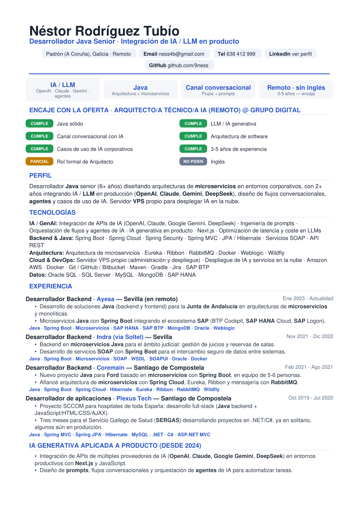
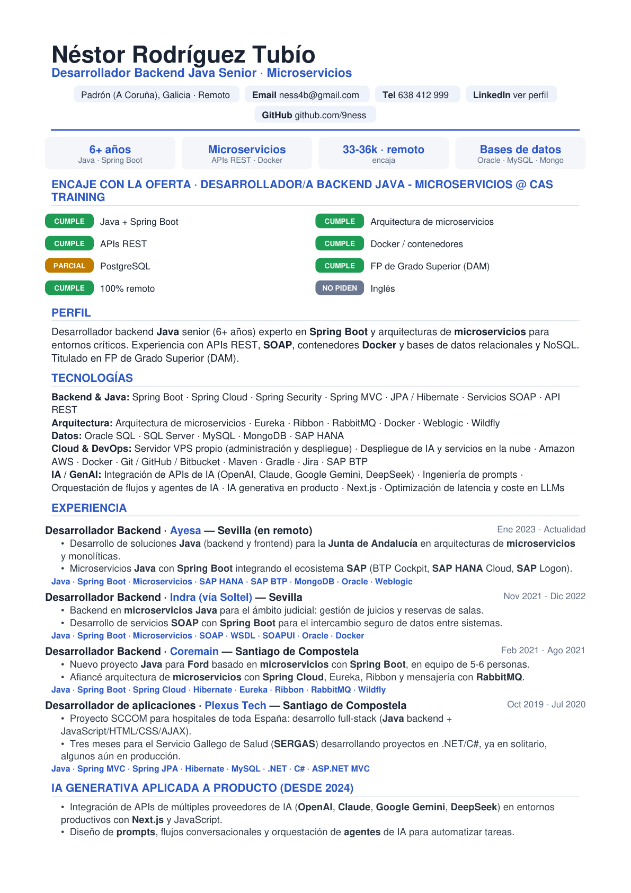
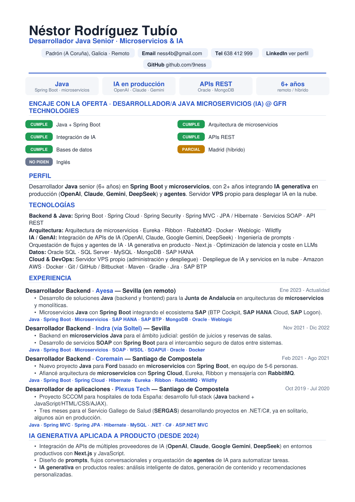
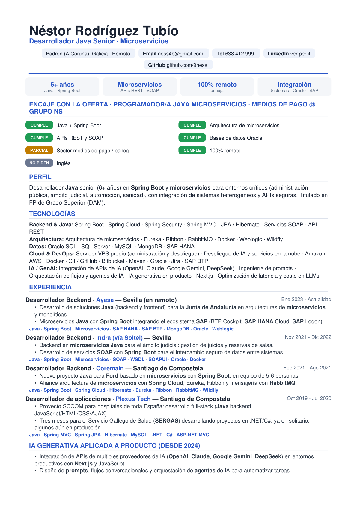

Ofertas reales (Tecnoempleo, julio 2026) que encajan con tu perfil. Cada tarjeta tiene tu CV adaptado a esa empresa y el enlace para aplicar. Ordenadas por afinidad.
← Volver a mi web / CV💡 Recomendado: descarga el CV adaptado, ábrelo para revisarlo, y pulsa “Ver oferta y aplicar”. En Tecnoempleo te inscribes y adjuntas ese PDF. Verifica siempre sueldo y requisitos en la propia oferta antes de aplicar.

90%
80%
78%
75%